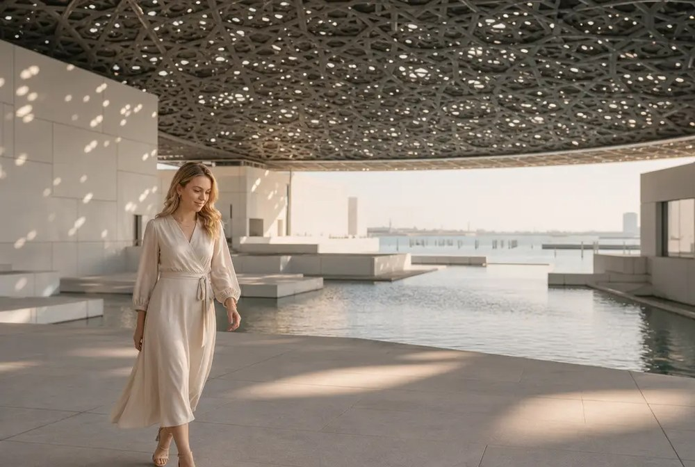
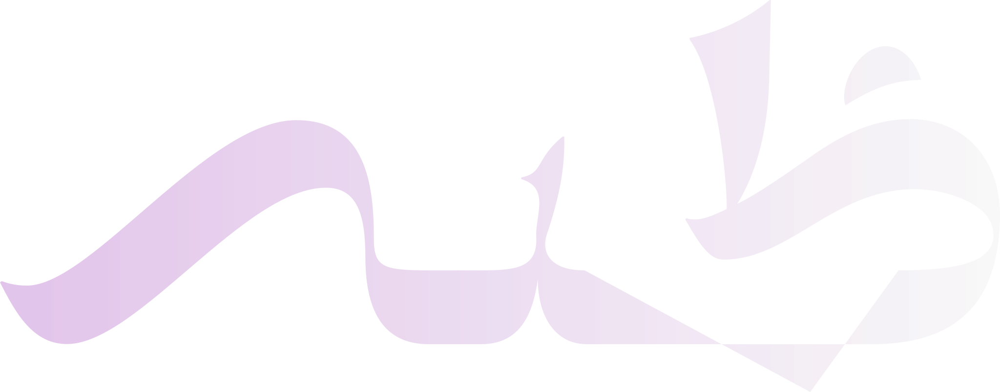
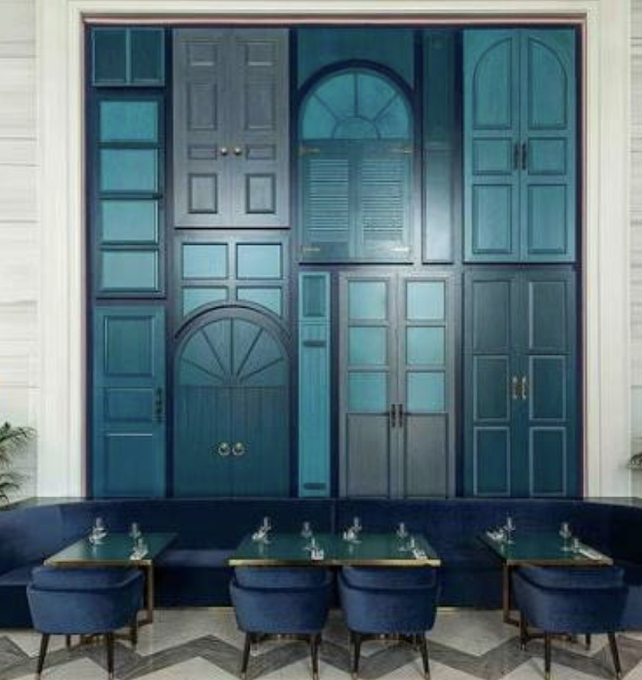
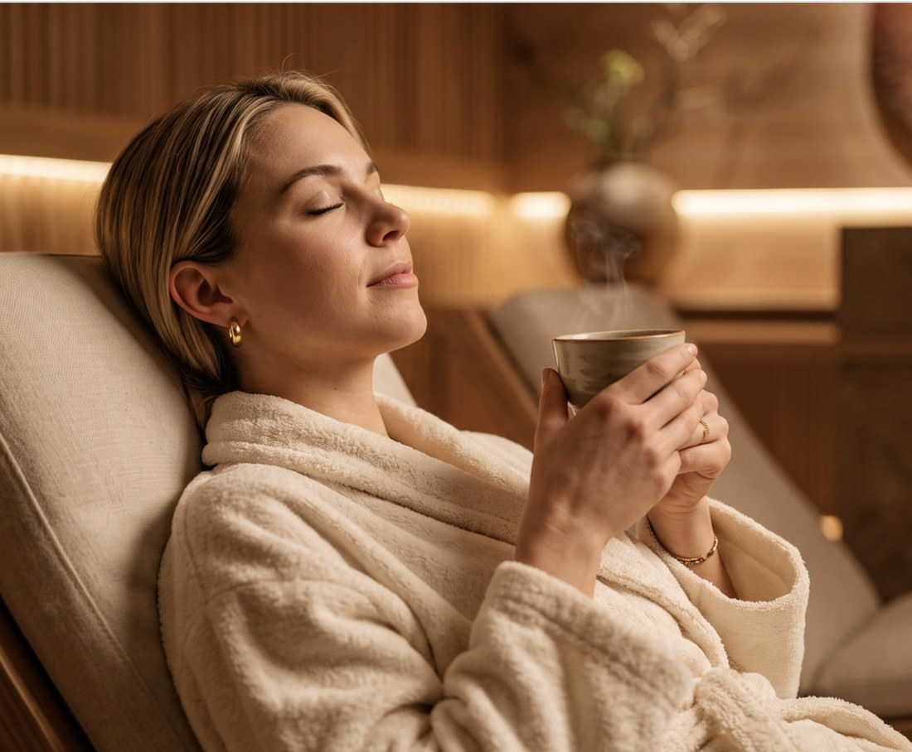
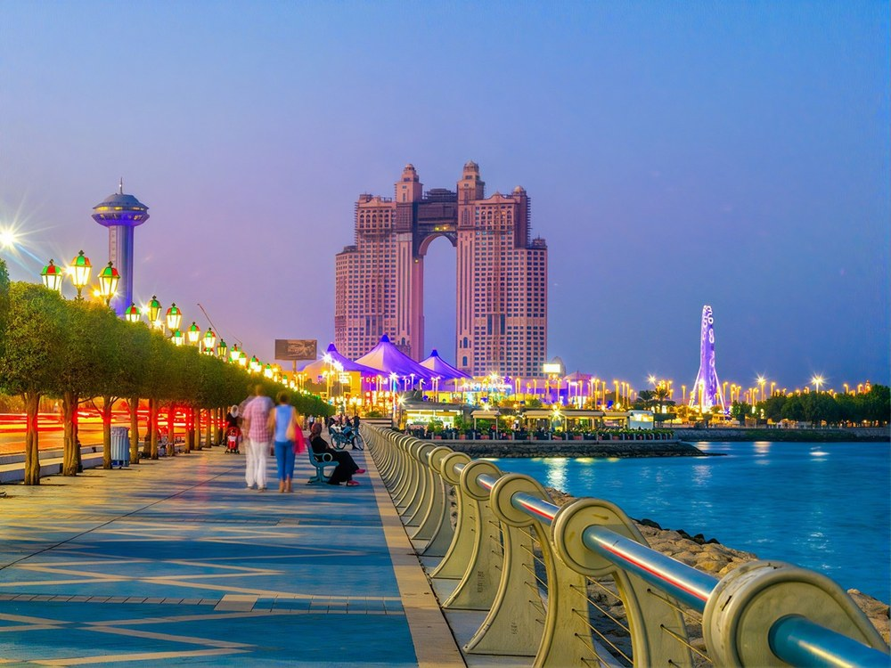
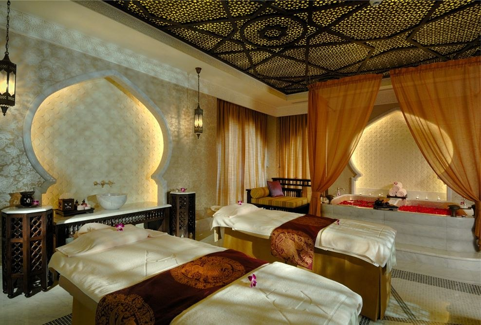
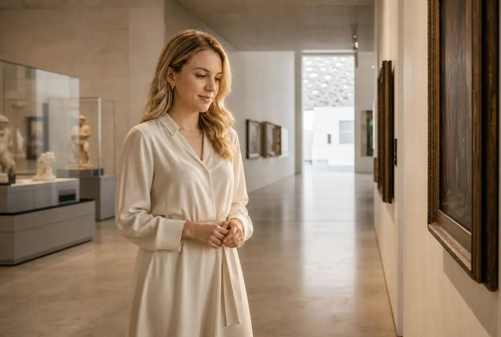
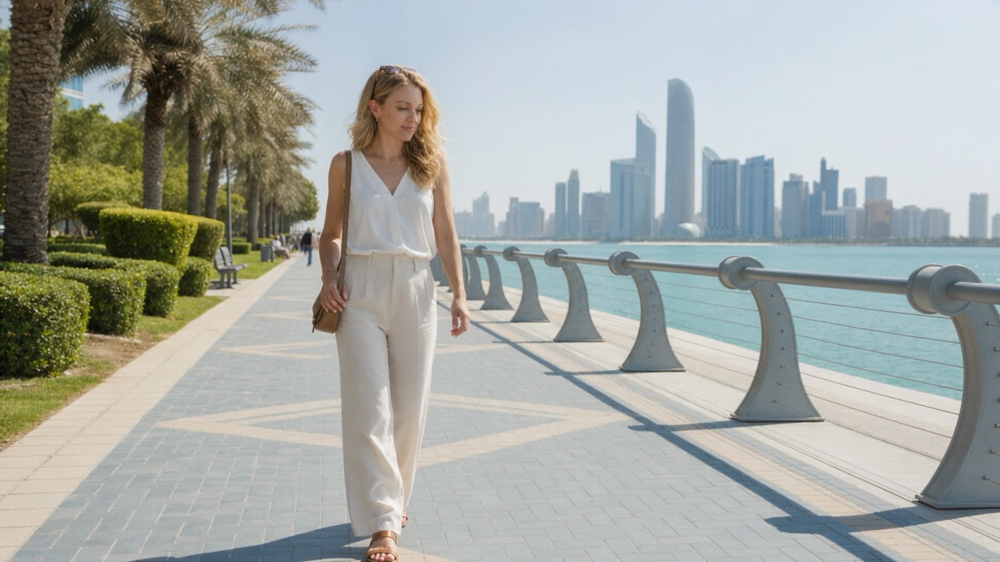
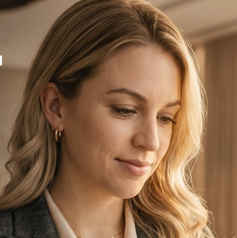

Make yourVideo Memories


Let’s generate the Video memories



Generating YourTrip Memories
You leaned into waterfront walks, scenic runs, spa mornings and destination dining.

4 Days
Your TripHighlights
Ready to share